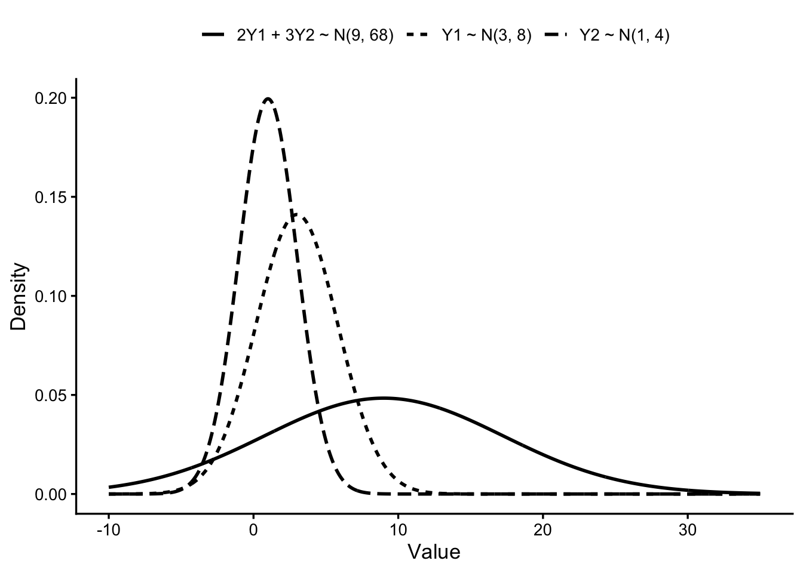
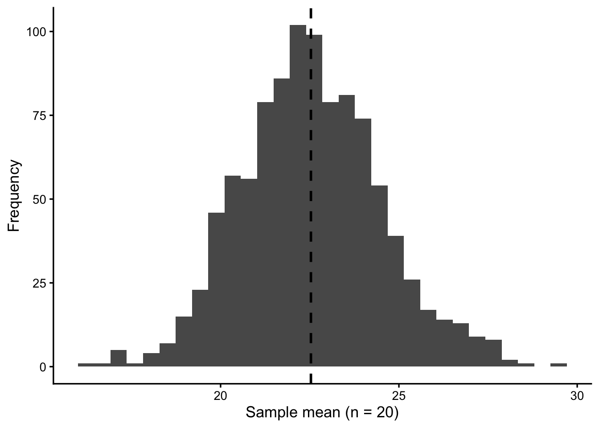
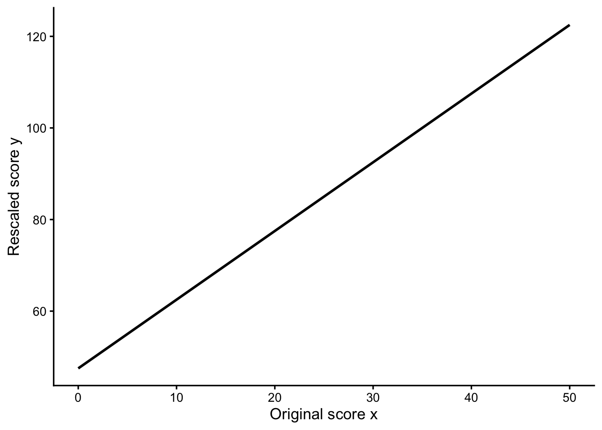
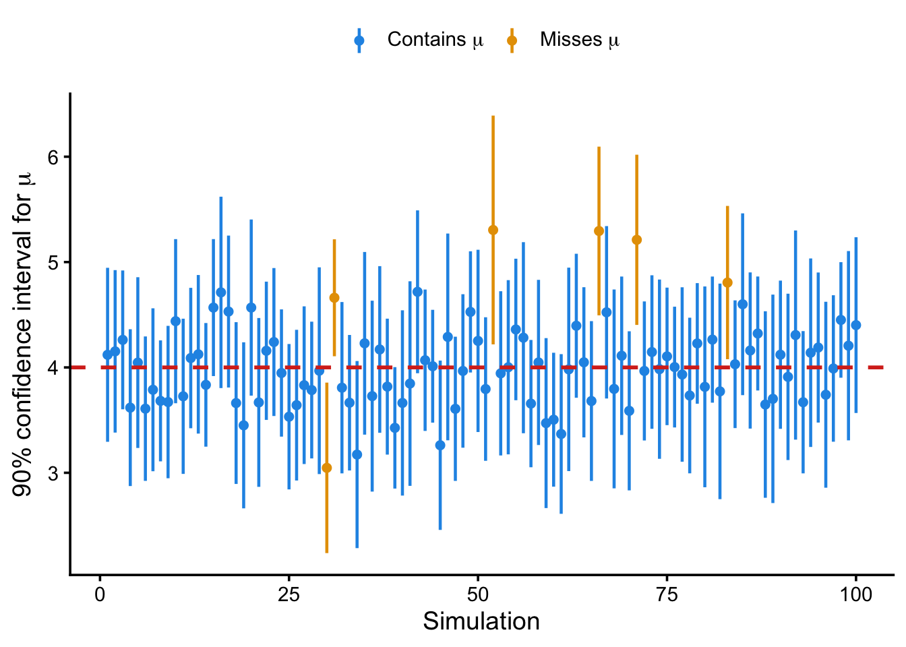
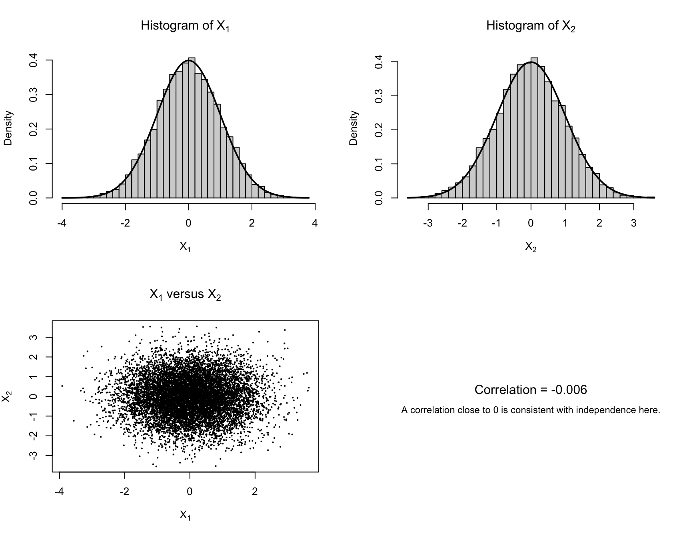

Mean = 9 Variance = 68 Therefore, 2Y1 + 3Y2 ~ N(9, 68).Probability and Statistics
Due Friday, Sep 11, 11:59 PM
Please submit your work in one PDF file to D2L > Assessments > Dropbox. Multiple files or a file that is not in pdf format is not accepted.
In your homework, please number questions in order.
Please sharpen your coding skill using R or any language you prefer. No need to show your work on this part!
Mean = 9 Variance = 68 Therefore, 2Y1 + 3Y2 ~ N(9, 68).
boston.
library(ggplot2)
boston <- read.csv("./data/boston.csv")
# Choose MEDV (median home value) as the continuous variable.
# This also works if the column name in the csv is written as MEDV.
medv_name <- names(boston)[tolower(names(boston)) == "medv"]
if (length(medv_name) != 1) {
stop("Could not find the MEDV variable in boston.csv.")
}
population <- boston[[medv_name]]
population <- population[!is.na(population)]
# (a) One simple random sample of size 20
set.seed(4780)
sample_20 <- sample(population, size = 20, replace = FALSE)
sample_mean <- mean(sample_20)
sample_mean[1] 21.89 [1] 23.005 23.585 22.330 21.570 24.575 22.070 24.300 26.340 24.900 26.700# Compare the sampling distribution with the population mean
mean(sample_means)[1] 22.55003mean(population)[1] 22.53281ggplot(data.frame(sample_mean = sample_means), aes(x = sample_mean)) +
geom_histogram(bins = 30, boundary = 0) +
geom_vline(
xintercept = mean(population),
linetype = "dashed",
linewidth = 1
) +
labs(
x = "Sample mean (n = 20)",
y = "Frequency"
) +
theme_classic(base_size = 13)
a = 47.5 cat("b =", b, "\n")b = 1.5 cat("Transformation: y =", a, "+", b, "x\n")Transformation: y = 47.5 + 1.5 x# (b) Original scores range from 0 to 50.
y_min <- a + b * 0
y_max <- a + b * 50
cat("Range of y: [", y_min, ", ", y_max, "]\n", sep = "")Range of y: [47.5, 122.5]# (c) Plot y versus x.
transform_data <- data.frame(x = seq(0, 50, length.out = 200))
transform_data$y <- a + b * transform_data$x
ggplot(transform_data, aes(x = x, y = y)) +
geom_line(linewidth = 1) +
labs(
x = "Original score x",
y = "Rescaled score y"
) +
theme_classic(base_size = 13)
library(ggplot2)
set.seed(4780)
# Simulation settings
alpha <- 0.10
mu <- 4
sigma <- 2
n <- 20 # Assumed because n was not specified
B <- 10000 # Number of simulated samples
t_critical <- qt(
1 - alpha / 2,
df = n - 1
)
# Construct one confidence interval
construct_ci <- function() {
y <- rnorm(
n,
mean = mu,
sd = sigma
)
y_bar <- mean(y)
s <- sd(y)
margin_error <- t_critical * s / sqrt(n)
c(
estimate = y_bar,
lower = y_bar - margin_error,
upper = y_bar + margin_error
)
}
# Repeat the experiment B times
simulation <- as.data.frame(
t(replicate(B, construct_ci()))
)
simulation$simulation <- seq_len(B)
# Does each confidence interval contain the true mean?
simulation$covers_mu <- with(
simulation,
lower <= mu & mu <= upper
)
# Estimated coverage
estimated_coverage <- mean(simulation$covers_mu)
estimated_coverage[1] 0.896# Select 100 confidence intervals for plotting
number_to_plot <- 100
plot_data <- simulation[seq_len(number_to_plot), ]
plot_data$status <- ifelse(
plot_data$covers_mu,
"Contains mu",
"Misses mu"
)
plot_data$status <- factor(
plot_data$status,
levels = c("Contains mu", "Misses mu")
)
number_covering <- sum(plot_data$covers_mu)
ggplot(
plot_data,
aes(
x = simulation,
y = estimate,
color = status
)
) +
geom_linerange(
aes(
ymin = lower,
ymax = upper
),
linewidth = 0.8
) +
geom_point(size = 1.8) +
geom_hline(
yintercept = mu,
color = "#D7301F",
linetype = "dashed",
linewidth = 1
) +
scale_color_manual(
values = c(
"Contains mu" = "#2296E6",
"Misses mu" = "#E69F00"
),
labels = c(
"Contains mu" = expression("Contains " * mu),
"Misses mu" = expression("Misses " * mu)
)
) +
labs(
# title = "Repeated 90% Confidence Intervals for the Population Mean",
# subtitle = paste(
# number_covering,
# "of",
# number_to_plot,
# "intervals contain the true mean"
# ),
x = "Simulation",
y = expression("90% confidence interval for " * mu),
color = NULL
) +
theme_classic(base_size = 14) +
theme(
legend.position = "top"
)
set.seed(4780)
N <- 10000
U1 <- runif(N)
U2 <- runif(N)
# Box-Muller transformation
X1 <- sqrt(-2 * log(U1)) * cos(2 * pi * U2)
X2 <- sqrt(-2 * log(U1)) * sin(2 * pi * U2)
# Numerical summaries should be close to those of N(0,1).
c(
mean_X1 = mean(X1),
sd_X1 = sd(X1),
mean_X2 = mean(X2),
sd_X2 = sd(X2),
correlation = cor(X1, X2)
) mean_X1 sd_X1 mean_X2 sd_X2 correlation
0.003976427 1.009910959 -0.008620931 1.001149640 -0.006026998 # Histograms with the standard normal density, plus a scatterplot.
old_par <- par(mfrow = c(2, 2))
hist(
X1,
probability = TRUE,
breaks = 40,
main = expression("Histogram of " * X[1]),
xlab = expression(X[1])
)
curve(dnorm(x), add = TRUE, lwd = 2)
hist(
X2,
probability = TRUE,
breaks = 40,
main = expression("Histogram of " * X[2]),
xlab = expression(X[2])
)
curve(dnorm(x), add = TRUE, lwd = 2)
plot(
X1,
X2,
pch = 16,
cex = 0.35,
xlab = expression(X[1]),
ylab = expression(X[2]),
main = expression(X[1] * " versus " * X[2])
)
plot.new()
text(
0.5,
0.55,
paste0("Correlation = ", round(cor(X1, X2), 4)),
cex = 1.2
)
text(
0.5,
0.40,
"A correlation close to 0 is consistent with independence here.",
cex = 0.9
)
par(old_par)